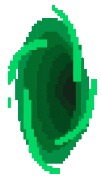

, _ , ( \ / ) /'` ' `'\ |''''''''| |\\\\////| '''""""'''
Hi, this is '0ffice' of illusionNe0, here you can find necessary information about me. Type 'help' to see commands. 00 =]
user@neo0ffice:~$
Oops.. UI doesn't work, use CLI!
info
experience
projects
contacts
others

X